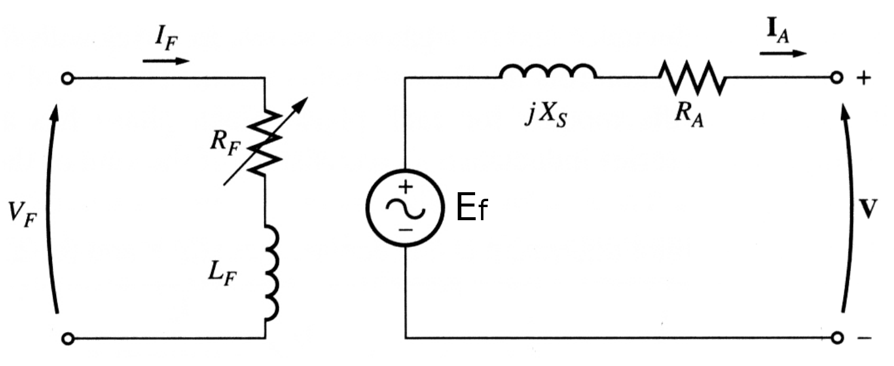
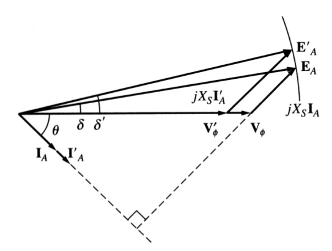
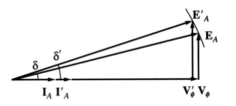
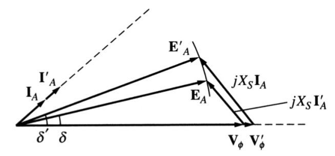
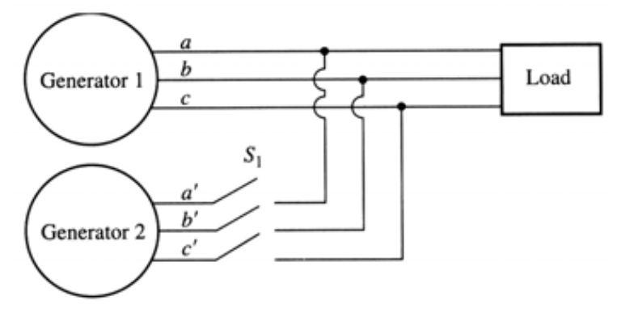
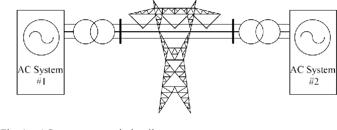

class: center, middle # EE-362 ELECTROMECHANICAL ENERGY CONVERSION-II # Synchronous Machines ## Ozan Keysan [keysan.me](http://keysan.me) Office: C-113 <span class="meta">•</span> Tel: 210 7586 --- # Full Equivalent Circuit with Field Circuit  --- # Lagging Power Factor (no field control)  ### As load increases, \\(V_t\\) considereably decreases: [Animation](https://andymikeknight.github.io/machines/synchronous/sg_standalone.html) #### Assumptions: Speed constant, \\(I_f\\) constant --- # Unity Power Factor (no field control)  ### As load increases, \\(V_t\\) slightly decreases: [Animation](https://andymikeknight.github.io/machines/synchronous/sg_standalone.html) #### Assumptions: Speed constant, \\(I_f\\) constant --- # Leading Power Factor (no field control)  ### As load increases, \\(V_t\\) slightly increases: [Animation](https://andymikeknight.github.io/machines/synchronous/sg_standalone.html) #### Assumptions: Speed constant, \\(I_f\\) constant --- ## Standalone Operation of a Synchronous Generator -- ## Two Independent Control Loops ## As electrical load increases, we should increase the mechanical input power: To keep the speed constant ## As current increases, we should control the field current (for constant terminal voltage) --- # Parallel Operation Synchronous Generators -- <img src="https://andymikeknight.github.io/machines/images/synch/parallel_gens.gif" alt="Drawing" style="width: 700px;"/> --- # Parallel Operation Synchronous Generators <img src="http://ndstudies.gov/energy/level2/files/level2/img/module04/iStock_000000730824Medium_hoover_dam_turbines-optimized.jpg" alt="Drawing" style="width:700px;"/> --- # Conditions for Closing the Switch?  --- # Conditions for Closing the Switch? -- - ## Equal Terminal Voltage -- - ## Equal Frequency -- - ## Co-Phasal (Zero phase angle difference) -- - ## Same Phase Sequence -- # Can you propose a very simple method to check all these? --- # Synchronizing Lamps <img src="https://2.bp.blogspot.com/-jYu7UJqhZEs/UVsJeEb2IdI/AAAAAAAADrE/4iLAs9ubjvg/s1600/Capture.PNG" alt="Drawing" style="width: 800px;"/> -- ### Industrial Method: [Synchronoscope](https://youtu.be/FI_07YVS3tY?t=34s), [Sync to Grid](https://www.youtube.com/watch?v=sgBzQaH5pWY) --- ## Grid Synchronization <iframe width="600" height="400" src="https://www.youtube.com/embed/xGQxSJmadm0" frameborder="0" allowfullscreen></iframe> #### [Synchronization at Sarıyar Hydro Electric Power Station](https://www.icloud.com/photos/#06dxESFkrO-GPCg3Ae12OM-9g) #### [Photos](https://www.icloud.com/photos/#06fK-zftt65rIN_ndNEPPcovQ), [Photos](https://www.icloud.com/photos/#0a0MwnEqaPSANIphFfM6na50Q), [Photos](https://www.icloud.com/photos/#066IGyElPdVmM1KrhrQLjyL1Q) --- # Grid Synchronization <iframe width="600" height="400" src="https://www.youtube.com/embed/sgBzQaH5pWY" frameborder="0" allowfullscreen></iframe> --- ## Synchronous Generator Connected to Infinite Bus # Infinite Bus ?? <img src="https://www.megabus.co.za/wp-content/uploads/2017/02/a107ddc47fadb1bfd370c093607f7b6b.jpg" alt="Drawing" style="width: 700px;"/> --- # Infinite Bus: <img src="https://www.researchgate.net/profile/Abdul_Hameed_Kalifullah/publication/236009431/figure/fig1/AS:363465500839938@1463668336782/Single-Machine-connected-to-infinite-bus-system.png" alt="Drawing" style="width: 600px;"/> ## An electric source so large that voltage and frequency assumed to be constant independent of power flow --- ## Synchronous Generator Connected to Infinite Bus <img src="https://www.eeeguide.com/wp-content/uploads/2016/01/Synchronous-Machine-on-Infinite-Bus-Bars-002.jpg" alt="Drawing" style="width: 700px;"/> ## Constant Terminal Voltage and Speed --- ## Synchronous Generator Connected to Infinite Bus <img src="https://andymikeknight.github.io/machines/images/synch/inf_bus_vf.gif" alt="Drawing" style="width: 700px;"/> ## Constant Terminal Voltage and Speed --- ## Synchronous Generator Connected to Infinite Bus # \\(\vec{E\_f} = \vec{V\_t} \pm (R\_a + j X\_s)\vec{I\_a}\\) ## \\(+\\): Generating ## \\(-\\): Motoring ## \\(V\_t\\): Constant (Infinite Bus) --- ## Synchronous Generator Connected to Infinite Bus ## Neglect \\(R\_a\\) for simplicity ## Constant Terminal Voltage ## Let's Have a Look at the Phasor Diagram --- # Constant Excitation, Variable Load (Circle Diagram) ## \\(I_f\\) constant, \\(E_f\\) magnitude constant -- ## \\(\vec{E\_f} = \vec{V\_t} + j X\_s\vec{I\_a}\\) -- ## \\(\vec{I\_a} = \dfrac{\vec{E\_f}-\vec{V\_t}}{jX\_s} \\) -- ## [Animation](https://andymikeknight.github.io/machines/synchronous/sg_p_infinite_bus.html) --- # Constant Power, Changing Excitation -- # Power = -- \\(P = 3 V\_t I\_a cos (\theta)\\) -- ## \\(P\\) constant, \\(V\_t\\) constant -- ## \\(I\_a cos (\theta)\\) constant! -- ## From geometry: \\(E\_f sin (\delta) = X\_s I\_a cos (\theta)\\) = Constant -- ## [Animation](https://andymikeknight.github.io/machines/synchronous/sg_p_infinite_bus.html) --- # Power of a Synchronous Machine -- ## We already showed: \\(E\_f sin (\delta) = X\_s I\_a cos (\theta)\\) ### Note: We neglected \\(R\_a\\) -- ## Write Power equation in terms of \\(E\_f\\) -- # \\(P = 3 V\_t I\_a cos (\theta) \\) --- # Power of a Synchronous Machine ## We already showed: \\(E\_f sin (\delta) = X\_s I\_a cos (\theta)\\) ### Note: We neglected \\(R\_a\\) ## Write Power equation in terms of \\(E\_f\\) # \\(P = \dfrac{3 V\_t E\_f sin(\delta)}{X\_s}\\) --- # Power of a Synchronous Machine # \\(P = \dfrac{3 V\_t E\_f sin(\delta)}{X\_s}\\) -- ## What about Torque? -- ### Neglect losses (core, copper etc) # \\(P = T \omega\_s\\) --- # Torque of a Synchronous Machine # \\(T = \dfrac{P}{\omega\_s }\\) # \\(T = \dfrac{3 V\_t E\_f sin(\delta)}{X\_s \omega\_s }\\) --- # Torque of a Synchronous Machine ## Remember the previous weeks: -- ## \\(T = T\_{max} sin (\delta)\\) -- ## \\(T\_{max} = \dfrac{3 V\_t E\_f}{X\_s \omega\_s }\\) --- # Torque of a Synchronous Machine ## \\(T\_{max} = \dfrac{3 V\_t E\_f}{X\_s \omega\_s }\\) <img src="http://i.stack.imgur.com/DmWrO.png" alt="Drawing" style="width: 450px;"/> --- # Generalized Power Transfer in AC Systems ## \\(P = \dfrac{3 V\_t E\_f sin(\delta)}{X\_s}\\)  --- # Generalized Power Transfer in AC Systems ## In Transmission Systems <img src="https://www.ssen-transmission.co.uk/globalassets/projects/bdsamplepictures-040-2.jpg" alt="Drawing" style="width: 600px;"/> --- # Generalized Power Transfer in AC Systems ## In Wireless Communication <img src="http://cdn4.explainthatstuff.com/how-antennas-work.png" alt="Drawing" style="width: 600px;"/> --- # Generalized Power Transfer in AC Systems ## In Wave Energy Converters <img src="https://www.emec.org.uk/wp-content/uploads/2012/04/8T1Y3729-2.jpg" alt="Drawing" style="width: 850px;"/> #### [Pelamis WEC Operation](https://www.youtube.com/watch?v=JYzocwUfpNg), [Full Story](https://www.youtube.com/watch?v=ziLtIbwFXB8) --- # Power Flow # DC Systems: ## Power flows from high potential to low potential -- # AC Systems: ## Power flows from leading voltage source to lagging voltage source (sign of load angle, \\(\delta\\) determines the direction of power flow) --- ## You can download this presentation from: [keysan.me/ee362](http://keysan.me/ee362)